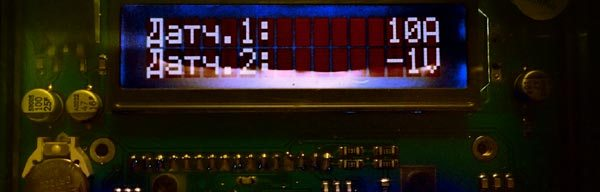
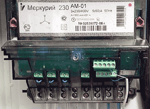
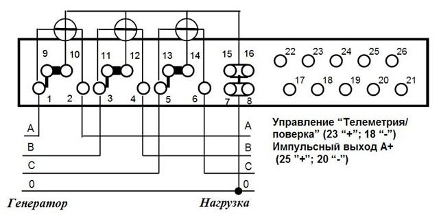
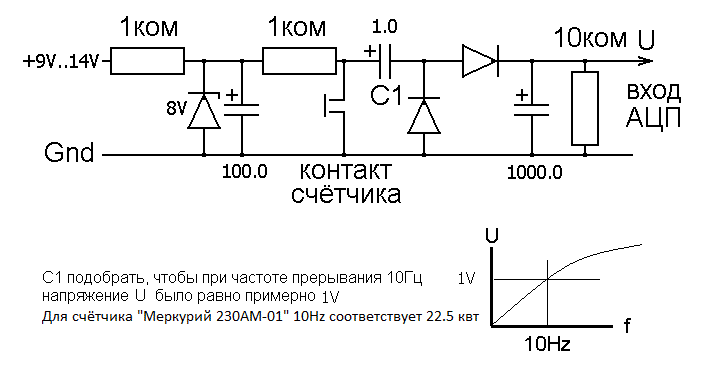
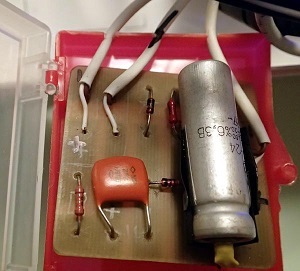
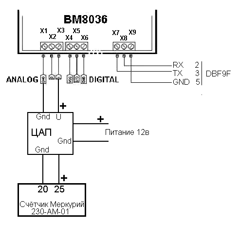

Подключение ВМ8036 к счётчику
Если у вас недостаточная квалификация в электротехнике, то не делайте того, что здесь описано. Вы можете увидеть количество киловатт-часов на табло счётчика без автоматизации.
Если вы всё же хотите подключить информационный выход счётчика к аналоговому входу контроллера, то соблюдайте правила безопасности. Иначе вы рискуете жизнью. А также потерей контроллера и счётчика.
Всегда старайтесь делать только то, что вам совершенно понятно, и только если знаете, как всё восстановить при неудаче.
В любом случае, я за ваши поступки не отвечаю.
В норме, счётчик должен быть опечатан, и вы не должны к нему ничего подсоединять. На форумах по домашней электрике есть советы по подключению контроллера без вскрытия счётчика, считывая частоту мигания лампочки. У многих счётчиков есть мигающая лампочка, и в паспорте указано, как частота мигания связана с регистрируемой мощностью. Например, для счётчика "Меркурий 230 АМ-01" при потребляемой мощности 2.25 квт лампочка мигает 1 раз в секунду (1600 импульсов на квт-час).
У нас 2 счётчика. Первый опечатан и расположен в доступном инспектору месте. Второй счётчик стоит в доме.

Подключение кабеля к информационному выходу счётчика.
Видимые на фото электрические соединения после монтажа должны
быть закрыты крышкой.
{kind=link}
У счётчика "Меркурий 230 АМ-01" есть информационный выход, замыкающийся в те моменты, когда включается мигающая лампочка. Это не сухой контакт, а транзисторный выход. Полярность и напряжение на подключаемом кабеле имеют значение.

Схема подключения счётчика из паспорта
Для преобразования частоты замыкания выхода в напряжение я сделал простую схему, которая выдаёт импульсы на конденсатор C1 в момент замыкания "контакта счётчика". Импульсы через диод подзаряжают выходной конденсатор. Чем чаще идут импульсы, тем выше напряжение на выходе схемы. Выходное напряжение подаётся на вход АЦП контроллера ВМ8036.

Схема ЦАП

Если напряжение питания схемы стабильно, то стабилитрон и конденсатор на входе можно убрать. Я так и сделал. Использую БИРП с выходным напряжением 12±0.1в.
Для работы с вашим счётчиком, возможно, вам придётся подобрать конденсатор C1. Схема должна работать на начальном линейном участке характеристики U(f). При максимальной возможной потребляемой мощности напряжение на выходе схемы должно быть примерно 1 вольт. Если получится 0.5 или 2 вольта, это уже нормально.
Практически, не нужно подключать эту схему к счётчику при подборе конденсатора C1. Достаточно имитировать такую частоту замыкания "контакта счётчика", которая соответствует максимальной потребляемой мощности.
После подбора элементов нужно подключить схему к счётчику и контроллеру, настроить контроллер, чтобы измерять входное напряжение в вольтах, и провести калибровку схемы.

Подключение ЦАП к панели ВМ8036
Калибровка - это сопоставление суммарной потребляемой мощности, которую регистрирует ваш счётчик, с измеренным напряжением на входе АЦП контроллера. Мощность можно узнать, умножив суммарный ток (по всем фазам) на 220 вольт. Другой способ - посчитать число миганий лампочки за определённое время в соответствии с инструкцией к счётчику. Третий способ - считать с табло счётчика число киловатт-часов за 1 час. Напряжение на входе АЦП показывает контроллер на экране. Лучше использовать именно эту величину, а не измерять напряжение тестером.
После калибровки нужно в настройках контроллера указать коэффициент, чтобы значение на экране контроллера было в амперах или киловаттах, как вам больше подходит.
У более современных счётчиков есть выход через ком-порт или даже WiFi, с которого можно считать значение потребляемой мощности прямо на компьютер. Если у вас такой счётчик, то АЦП и контроллер не нужны.
Что вы будете делать с полученным значением потребляемой мощности - дело вкуса. Я подключаю контролер ВМ8036 через преобразователь КОМ-USB к компьютеру, считываю показания контроллера при помощи своей программы da4a8036 , сохраняю их в протоколе на память, и передаю на веб-страничку дачи, чтобы следить, не включено ли что лишнее, и сколько энергии уходит на обогрев и другие потребности дома.
2014-11